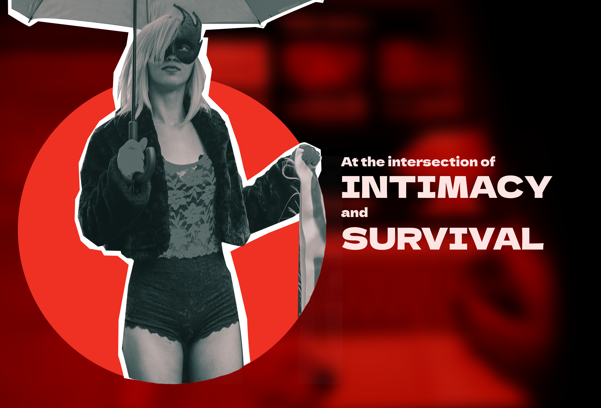
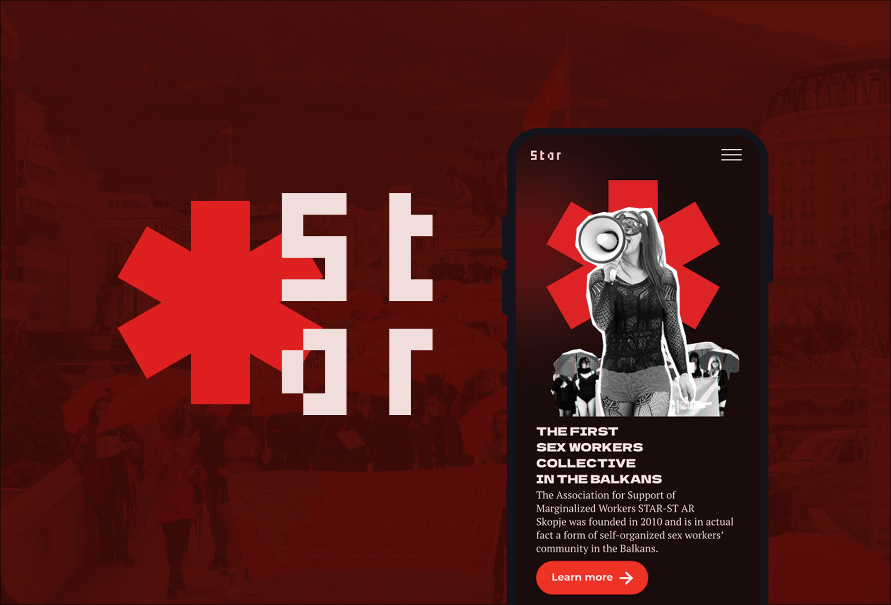
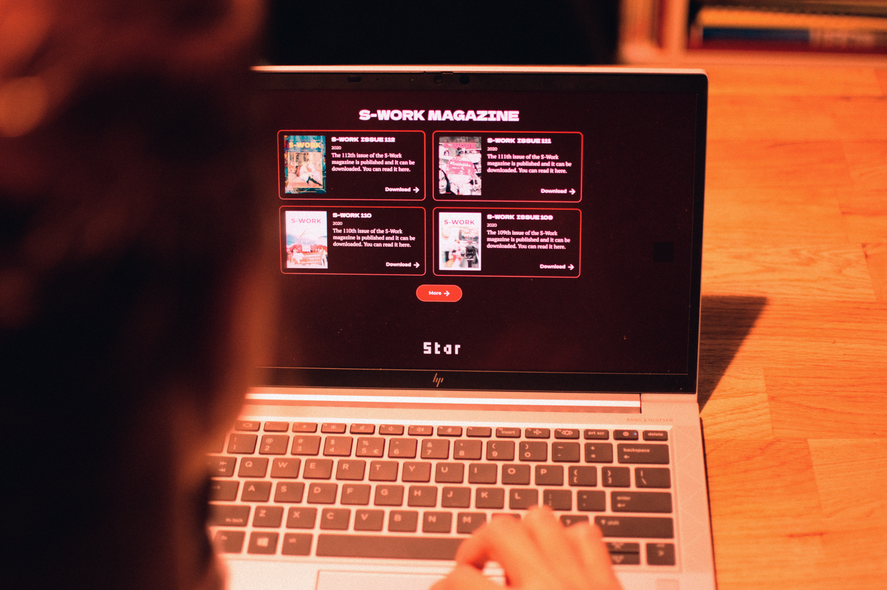
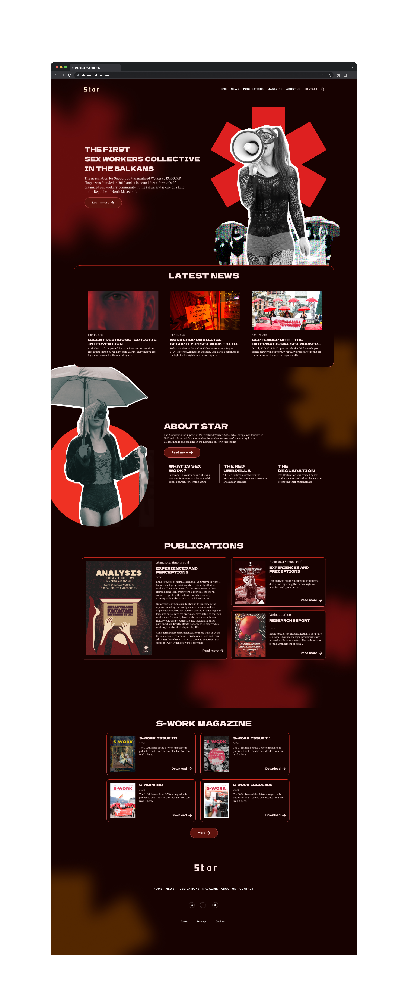
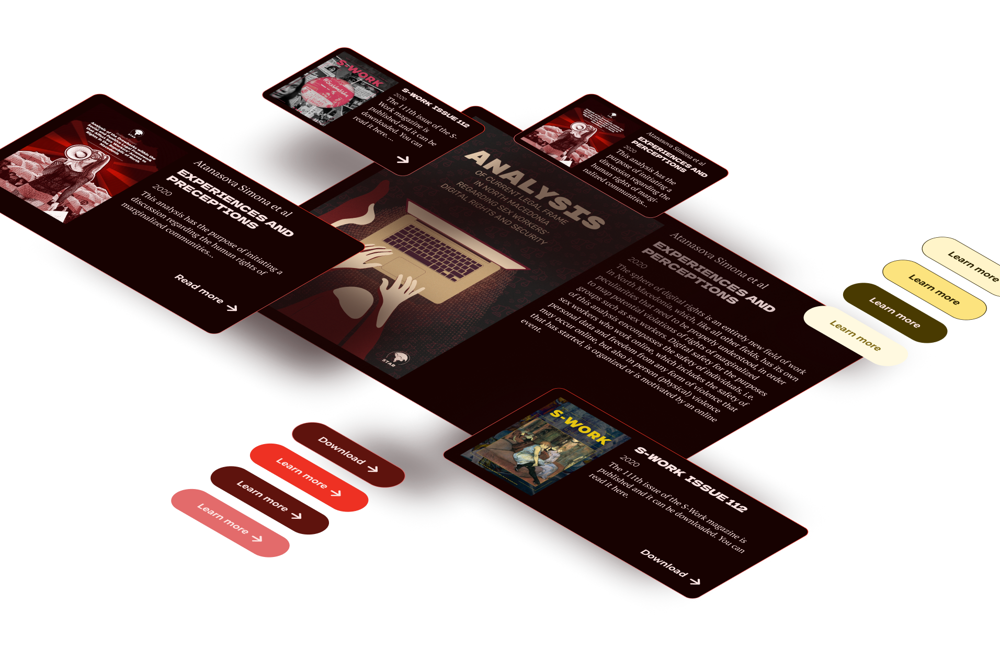
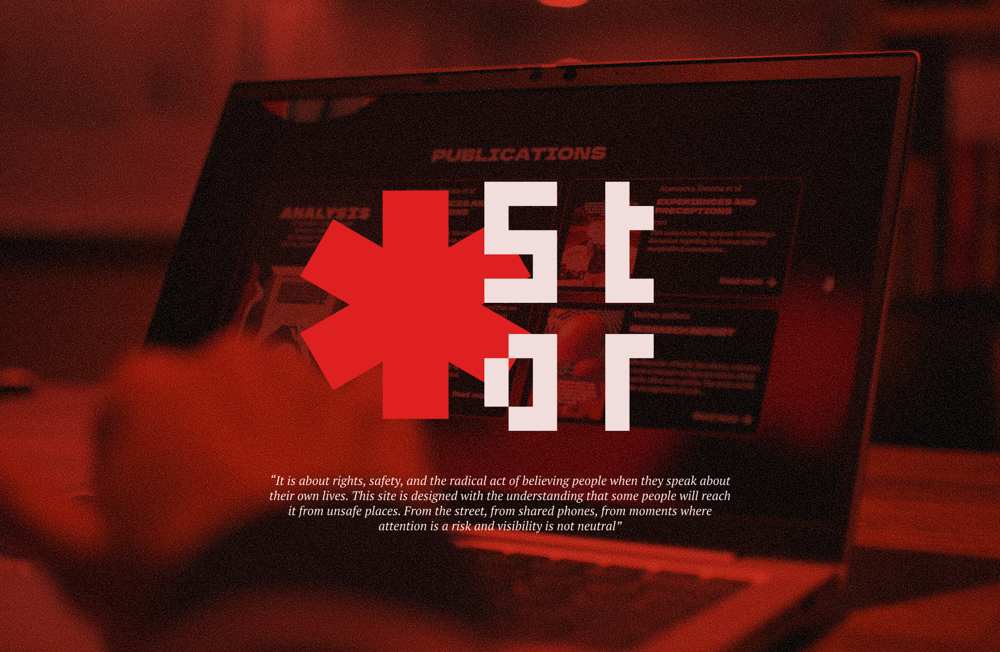

Star website redesign
-
Client
Star collective
-
Year
2025
This UI and Web design project was part of a larger rebranding for a civil sector organization. The project involved designing a clean and intuitive web interface to better communicate their mission through a modern, accessible new visual identity.
STAR, a sex workers non-profit, needed a new website to reflect their evolving work in field of human and labor rights of one of the most marginalised groups in society. I like this kind of work, since they are a real chance to understand the social reality of different groups of people and their professional lives that are burdened by social stigma.
STAR needed both a platform for their own users which are sex workers themselves who come from different socio-economic backgrounds. On the other hand, they also needed a web site to show their donors that they could be perceived as a credible partner. I wanted to know how I can help as a designer to create a better safer space for sex workers. In this regard, I thought that the best manner to create insights would be to gather qualitative data from the intended users of the site, the sex workers themselves. I needed to gain more understanding rather than to have a condescending posture or be driven by stereotypes.
Through close communication and understanding of their needs, we created an interface that is quiet, with dark colours. Contrast was intentional, not decorative. Nothing flashed, nothing demanded to be seen. The design reduced glare, preserved night vision, and minimised the chance of being noticed by someone standing too close. This reflected the everyday working lives of sex workers.





